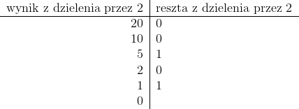

Reprezentacja liczb w komputerze
Sposób tradycyjny
Dla przykładu zamieńmy liczbę 20 na liczbę binarną.
W jednym kroku algorytmu wykonujemy dwie czynności:
wyznaczamy resztę z dzielenia przez 2 konwertowanej liczby
konwertowaną liczbę dzielimy przez 2 (dzielenie całkowite)
Daną czynność wykonujemy tak długo, jak długo liczba dziesiętna jest większa od 0.
Przykład zamiany liczby 20 jest przedstawiony poniżej:

Następnym krokiem jest spisanie reszt (z dołu do góry), czyli
20 = (10100)2.
Do rozwiązania problemu posłużymy się tablicą, a następnie wyświetlimy jej zawartość w
odwrotnej kolejności. Załóżmy, że typ int składa się z 4 bajtów, czyli maksymalnie możemy uzyskać 31 bitów (jeden bit przeznaczony jest na znak liczby).
W razie problemow prosze wysylac zgloszenia na nasz adres mailowy:
wow@wp.pl
lub odwiedzic
facebooka